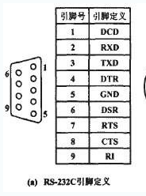

连接计算机到仪器
- 使用GPIB控制器
GPIB是一种硬件，用于控制带有GPIB接口的一台或多台外部仪器并与之通信。GPIB也被IEEE重新定义并标准化，命名为IEEE 488.2。
GPIB控制器及外部接口几乎可以用于所有的平台和总线，外部接口将串口、并口、以太网、USB端口转换为GPIB。
计算机与GPIB使用简单直观的ASCII命令通信，ASCII命令采用SCPI协议。
大部分GPIB仪器的驱动程序是免费的。
GPIB的特性：
并行传输数据，一次一个字节（8位）；
硬件管理握手、定时等信号；
多个仪器可以在总线级联；
数据传输快，800kB/s以上。
- 串行通信
许多工业计算机至少有一个可用的串行接口，如果没有内置的串行接口，可以购买一个USB RS-232 适配器，每个适配器通常提供1~4个RS-232端口。RS-232扩展板一般可提供16个RS-232端口。
在MAX中可以配置串行端口设备，如波特率、停止位等。

PC串行引脚如上图，在多数情况下，仅使用这些信号线的一部分，经常用到下列信号：
发送（TxD）：将数据从PC发送到仪器。
接收（RxD）：将数据从仪器接收到PC。
信号地（SG）：接地参考。
清除发送（CTS）:通过这条线告诉仪器PC已经准备好接收数据。
准备发送（RTS）:通过这条线告诉仪器PC已经准备好发送数据。
如果使用串行设备通信遇到问题，可以尝试以下操作:
交换发送线和接收线：可以使用“空调制解调器”的特殊电缆；
检查波特率、奇偶、停止位、握手协议及PC上的其他串行口参数；
串行仪器要求供电，确认打开电源；
确认CTS和RTS线连接正确；
确认串行端口不被其他应用程序占用；
查看正在使用的串口是否是自己想要的那个，因为串口通常有多个；
确认发送正确的结束字符（EOL）。
- 以太网接口仪器
许多仪器具有以太网接口，并可以接入到网络中，他们使用TCP/IP协议作为命令传输机制进行通信。
可以在软件中使用如下的VISA资源字符格式访问：
TCPIP :: host address [::LAN device name] [::INSTR]
例如，如果设备的IP地址为10.0.1.124，仪器设备是“SPX01”，则VISA资源字符串可 以是: TCPIP :: 10.0.1.124 :: INSTR 或者 TCPIP :: SPX01 :: INSTR
- SCPI ：仪器语言
是一组采用简单、直观的ASCII命令与仪器通信的规则。
并非所有的仪器都使用SCPI协议进行通信，许多串行仪器和以太网仪器为了提高效率，使用了人类不可阅读的协议。
- VISA：与仪器通信的通行证
将仪器物理连接到计算机有许多不同的方法，我们想要有一个软件，专门管理各种连接，使我们不必关心物理连接的类型。VISA（虚拟仪器软件体系结构）可以实现这个功能。
VISA需要知道“仪器的物理连接类型”和“物理连接的位置”。通过VISA资源字符串告诉VISA这些基本信息。
然后可以在MAX实用程序中的“设备与接口”中配置VISA资源，在MAX中设置了VISA资源后就可以在LabView中与仪器进行通信。
在LabView中使用“仪器I/O/助手”
仪器I/O助手是一个Express VI，可以通过简单的定义，实现与VISA资源所描述的仪器进行通信。
在仪器I/O助手VI的配置对话框中，允许通过VISA资源名、通信超时时间值及结束符选择仪器。
仪器连接到计算机后，并已经准备好向它发送命令以及分析返回的数据。与仪器进行通信的最简便的方法就是找到仪器的驱动程序。
仪器驱动程序创建仪器命令，并通过以太网、串口、GPIB或VXI与仪器进行通信。
在LabView中寻找仪器驱动
Tools—>Instrumentation—>find instrument drivers..
NI仪器驱动程序查找工具提供了200多个厂家的4000多个LabView仪器驱动程序。输入仪器生产商的名字、型号、或其他关键词，单击search，即可选择需要的驱动下载安装。
VISA函数
VISA是仪器编程的一个标准I/O应用程序编程接口（API）,VISA能够控制VXI、GPIB、PXI或串行仪器，可以根据使用的仪器类型，调用适当的仪器驱动程序。
VISA提供了很多函数，位于instrument I/O —> VISA中，如下：
VISA Write 函数：向VISA resource name指定的设备写入数据。
VISA Read函数：从设备中读取数据。
VISA Clear函数：清除设备。
VISA Read STB函数：读取设备的状态字节。
VISA Assert Trigger 函数：在设备中定义软件和硬件触发信号。
VISA还包含很多高级函数，可以在 Instrument I/O—>VISA—>VISA Advanced选项卡中找到。
总线/接口专用的VISA函数 、VISA GPIB 与传统的GPIB函数、VISA串口函数、VISA USB函数
创建用户自己的仪器驱动程序
File—>new 从树形控件选择Project—>Project From Wizard—->Instrument Driver Project 单击OK，启动Instrument Driver Wizard”